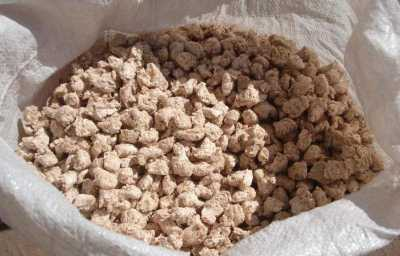

В кормлении сельскохозяйственных животных огромную роль имеет правильное, научно обоснованное, сбалансированное кормление. Чтобы раскрыть генетический потенциал животных и птицы и добиться максимальной продуктивности необходимо, чтобы питательный вещества поступали в организм животных в нужном количестве и в правильном соотношении. Обеспечить такой баланс могут готовые полнорационные комбикорма.
Комбикорм представляет собой очищенную и измельченной кормовую смесь растительного и животного сырья. Для его обогащения добавляют витамины, аминокислоты, микро- и макроэлементы, ферменты и другие добавки, необходимые для нормального роста и развития сельскохозяйственных животных. Он представляет собой однородную массу, готовую к использованию. Может выпускаться в гранулированном и рассыпном виде.
Основные компоненты: зерновые культуры углеводсодержащие продукты (пшеница, ячмень, овес, просо, тритикале, кукуруза); жмыхи шрота (льна, сои, подсолнечника) ; бобовые с повышенным содержанием белка (соя, бобы, горох, нут, люпин); масличные культуры (рапс, подсолнечник) ; отходы зерновой и пищевой промышленности; аминокислоты; минеральные смеси; витамины.
ОАО «Мелькомбинат» предлагает своим потребителям широкий выбор полнорационных комбикормов концентратов на основе белков, витаминов и минералов (БМВД). Наша продукция предназначена для всех видов сельскохозяйственных животных и птиц и отличается оптимальной сбалансированностью, высоким качеством, безопасностью и позволяет достичь наибольшей продуктивности.
Производственный процесс